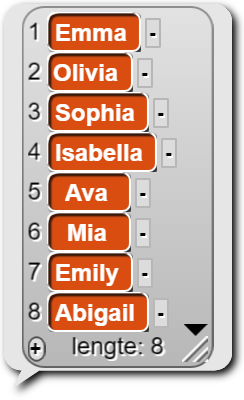
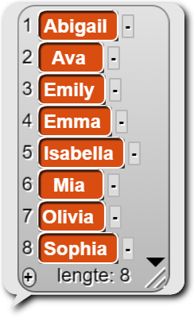

Een lijst sorteren
Dit zijn de top 8 meisjesnamen in Amerika in 2014.
Stel dat we een lijst met namen hebben die we willen sorteren op alfabetische
volgorde:
Dit zouden bijvoorbeeld getallen kunnen zijn maar ook iets totaal anders dat
vergeleken en gesorteerd kan worden. Getallen en woorden moeten vaak gesorteerd worden.

→

Probeer een algoritme te beschrijven met genoeg details dat iemand anders je
beschrijving zou kunnen gebruiken om een lijst te sorteren.
- Ontwerp een recursief algoritme voor het sorteren van namen.
- Bedenk eerst een algemeen strategie; hoe zou jij een groep namen stap voor stap
sorteren.
- Bedenk dan hoe je een computer zou vertellen om dit te doen, die niet zo slim is
als jij en alleen specifieke functies kan uitvoeren.
- Bouw nu je algoritme: een
sorteerrapporteur met als invoer een lijst
die een nieuwe lijst rapporteert met daarin dezelfde elementen maar in alfabetische volgorde. Test
je algoritme met namen én getallen.
Getallen vergelijken en tekst vergelijken kan gedaan worden met dezelfde blokken,
dus je sorteeralgoritme zou voor beide gevallen moeten werken.
- Deel je sorteeralgoritmes met elkaar. Beschrijf de overeenkomsten en verschillen.
Er zijn verschillende algoritmes om een lijst te sorteren. Sorteeralgoritmes geven dezelfde resultaten, maar
de code en efficiëntie kunnen heel erg verschillen. De volgende twee pagina's beschrijven twee
veelvoorkomende sorteeralgoritmes uit.